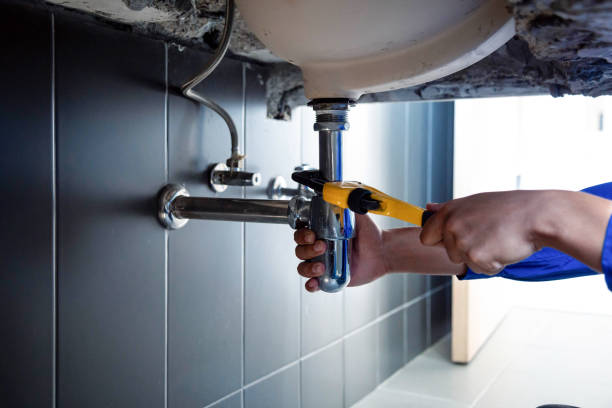

What is Frisco’s Most Trusted Plumbing Contractor for Residential Repairs?
Posted by on 2024-06-07
When residents of Frisco, Texas, face a dripping faucet, a clogged drain, or a malfunctioning water heater, they seek the services of a reliable and skilled plumbing contractor. In the vibrant community of Frisho—known for its bustling economy and family-friendly neighborhoods—homeowners prioritize trustworthiness and expertise when it comes to residential repairs. While there may be several contenders for the title of Frisco's most trusted plumbing contractor for residential repairs, this essay will discuss the attributes that such a company should possess and why these traits are vital to earning homeowners' confidence.
Firstly, trust is built on a foundation of licensure and certifications. A reputable plumbing contractor in Frisco would be fully licensed by the Texas State Board of Plumbing Examiners. This ensures that they have met all state requirements to perform plumbing work legally and safely. Additionally, certifications from industry organizations like the National Inspection Testing Certification (NITC) or memberships in groups such as the Plumbing-Heating-Cooling Contractors Association (PHCC) signal ongoing dedication to staying abreast with current standards and technologies.
Secondly, experience is another pillar supporting a trusted contractor's reputation. A well-established company with years—or even decades—of service within Frisco will have not only honed their skills through varied repair scenarios but also forged strong relationships within the community. Longevity suggests resilience and reliability; it indicates that homeowners consistently choose them over competitors.
Thirdly, transparency in pricing contributes significantly to trust. The most trusted plumber would offer upfront pricing without hidden fees so homeowners can make informed decisions without fearing unexpected costs upon job completion. Free estimates for repairs further enhance transparency, demonstrating confidence in their value proposition.
Fourthly, quality customer service cannot be overstated when discussing trustworthiness. Exceptional contractors provide courteous communication from initial contact through follow-up after job completion. They show up on time, respect homeowners' property by keeping the workspace clean and tidy during repairs, and ensure customers are satisfied before considering a job finished.
In addition to these core qualities, testimonials and reviews play an increasingly important role in establishing trustworthiness in today's digital world. Positive feedback from fellow Frisco residents on platforms like Google Reviews or Nextdoor speaks volumes about past performance while providing social proof of dependability.
Finally yet importantly is emergency response capability—a truly trusted plumber understands that some issues can't wait until regular business hours and offers 24/7 emergency services to address those urgent situations promptly.
While I cannot specify which particular company holds the distinction as "Frisco’s Most Trusted Plumbing Contractor" due to my knowledge cutoff date being in March 2023—it is essential that whichever entity claims this title must embody these characteristics: proper licensure and certification; rich experience; transparent pricing; exceptional customer service; positive local reviews; and readiness for emergencies.
Ultimately, choosing Frisco’s most trusted plumbing contractor comes down to an individual homeowner’s experiences combined with collective community endorsements—all stemming from consistent demonstration of skillful expertise coupled with genuine customer care over time.